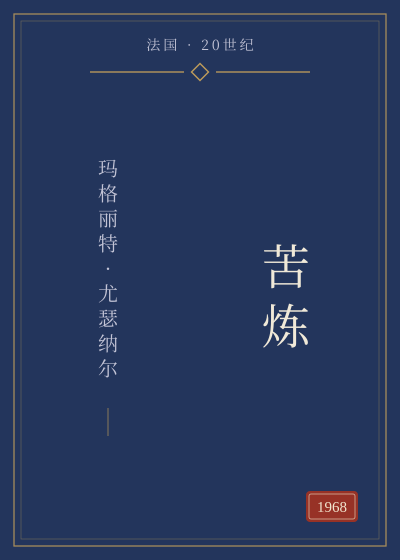
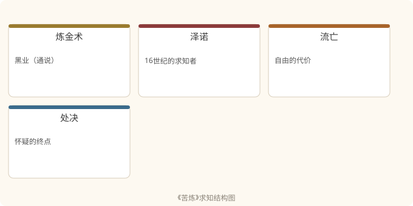

苦炼
一、基本信息
| 作者 | 玛格丽特·尤瑟纳尔 |
|---|---|
| 成书/出版 | 1968年（Britannica：L'Oeuvre au noir (1968; The Abyss)——B285） Marguerite Yourcenar — Encyclopaedia Britannica（百科全书） |
| 国别/地区 | 法国 |
| 时代 | 现当代 · 20世纪 |
| 体裁 | 历史小说 |
| 语言 | 法语 |

《苦炼》求知结构图（主题·结构图）
二、创作背景
Britannica（B285）：'Another historical novel is L'Oeuvre au noir (1968; The Abyss)...'——另一部历史小说；作者文体：'rigorously classical style, their erudition, and their psychological subtlety'（B285）。
题材（通说待核）：16世纪佛兰德斯炼金术士/外科医生泽诺的一生——'苦炼'（the Work in Black）的炼金术隐喻。
三、内容脉络
泽诺的求知与流亡：从修道院到阿尔卑斯的处决（通说待核）。
四、主要人物表
| 人物 | 身份 | 说明 |
|---|---|---|
| 泽诺 | 炼金术士 | （通说待核） |
五、主题与艺术特点
- 知识与自由的代价（通说待核）。
- '苦炼'：黑业（通说待核——炼金术术语）。
- 文艺复兴的怀疑精神（通说）。
六、影响与评论
- Britannica：'Another historical novel is L'Oeuvre au noir (1968; The Abyss)...'（B285）。
Marguerite Yourcenar — Encyclopaedia Britannica（百科全书） - 作者页：尤瑟纳尔古典与博学（B285 作者级定位）。
Marguerite Yourcenar — Encyclopaedia Britannica（百科全书）
七、阅读建议
难点
- 文艺复兴与炼金术史。
- 尤瑟纳尔的古典语汇。
- 《苦炼》（上海三联书店版本，通说待核）。
- 法文原版（Gallimard）。
先《哈德良回忆录》后本作。
八、待核实
- 1968年出版（Gallimard说）核对。
- 泽诺人物原型（真实炼金术士说）待核。
- '苦炼'（Oeuvre au noir）术语核对。
本页主要来源
玛格丽特·尤瑟纳尔的其他收录作品：哈德良回忆录